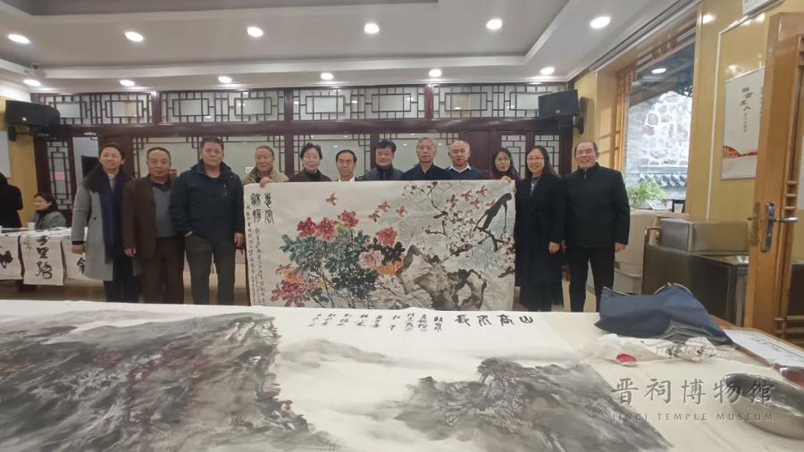

2021年11月27日上午，太原傅山研究会第四届会员代表大会、太原市董寿平书画艺术研究会第四届会员代表大会在太原市晋祠博物馆召开。相关部门领导山西大众书画院常务副院长、省劳动保障厅(原)厅长李顺通，山西人民出版社社长姚军，太原市文物局党组成员、三级调研员吴春明，中国美术家协会会员、中国职工书画院副院长、山西省中国画学会副会长崔惠民，太原市晋祠博物馆馆长王新生，太原市文物保护研究院晋祠博物馆馆长郭保平，太原市晋祠博物馆副馆长连颖俊，太原市晋祠博物馆副馆长王志强，山西省政府文史馆研究员、山西人民出版社编审赵嗣成，山西省美术家协会副主席乔亚丁，山西省政府文史馆馆员、—级美术师裴希敏，山西省中国画学会副会长、人物画艺委会主任李庆富等出席了大会，太原傅山研究会会员、太原市董寿平书画艺术研究会会员以及著名书画大师董寿平之孙董逸泉画家等参加了本次大会。上午9时召开《太原傅山研究会第四届会员代表大会》，会议由太原市文物保护研究院晋祠博物馆馆长郭保平主持，太原傅山研究会常务副会长赵宝琴对研究会成立以来的工作进行了总结和回顾。研究会成立三十多年来，在太原市委、市政府与社会各级领导的亲切关怀下，在太原市民政局的指导下，在太原市文物局、太原市文物保护研究院、太原市晋祠博物馆的领导下，通过所有会员同仁的不懈努力，在傅山先生书画艺术、医学思想学术研究与传播等方面做了大量的工作，取得了可喜的成绩，得到与会人员的一致认可。
傅山研究会秘书长郭蕾，就1999年7月到2021年6月对研究会的财务情况作了详实的汇报。
会议经过表决，通过了新的《太原傅山研究会章程》，选举产生了新一届研究会会长、副会长、秘书长、理事、监事等。会议推选沈鹏、李钢为名誉会长，选举赵宝琴为执行名誉会长，选举赵嗣成为会长，选举袁筠、王荣生、刘润兰、赵怀舟、刘瑞鹏、宋涛、张维骏为副会长、选举郭蕾为秘书长、选举左正华为监事。主管部门领导太原市晋祠博物馆馆长王新生发表讲话，新当选的会长赵嗣成作了表态发言，今后一定要继续组织开展对傅山先生的学术思想与书画艺术及医学思想等进行深入研究，做好宣传工作，坚持办好会刊《傅山研究通讯》，努力为实现中华民族的伟大复兴，为弘扬中华民族的优秀传统文化而做出积极的贡献。
上午10时30分，《太原市董寿平书画艺术研究会第四届会员代表大会》顺利召开，会议由太原市晋祠博物馆副馆长连颖俊主持，太原市董寿平书画艺术研究会副会长赵宝琴对研究会成立以来的工作进行了总结和回顾。研究会成立二十多年来，在太原市委、市政府与社会各级领导的亲切关怀下，在太原市民政局的指导下，在太原市文物局、太原市文物保护研究院、太原市晋祠博物馆的领导下，通过所有会员同仁的不懈努力，在董寿平先生书画艺术学术研究与传播等方面做了大量的工作，取得的成绩得到与会人员的一致认可。
董寿平书画艺术研究会秘书长刘琼就2000年10月到2021年6月对研究会的财务情况作了详实的汇报。
会议经过表决，通过了新的《太原市董寿平书画艺术研究会章程》，选举产生了新一届研究会会长、副会长、秘书长、理事、监事等。会议推选苏士澍、杨力舟、黄征、李钢为名誉会长，选举赵宝琴为会长，选举徐晋平、孙海青、李砚强、路洪明、吕海江、赵继原、任志茂为副会长，选举刘琼为秘书长，选举李月琴为监事。主管部门领导太原市文物局党组成员三级调研员吴春明发表讲话，新当选的会长赵宝琴作了表态发言。今后要继续组织开展对董寿平先生书画艺术理论的深入研究，要举办董寿平先生书画艺术展览，开展学术研讨，加强对外文化艺术交流，促进省内外以及国际之间的交流与发展。同时做好编辑、宣传工作，坚持办好《董寿平研究》会刊，努力创作出更多更好的书画艺术精品，奉献于社会，服务于人民，努力为实现中华民族的伟大复兴，为弘扬中华民族的优秀传统文化与传承董寿平先生书画艺术而做出更大的贡献。

大会结束后，与会书画家们参加了激情洋溢的书画笔会，泼墨挥毫，共同讴歌新时代所取得的光辉成就。